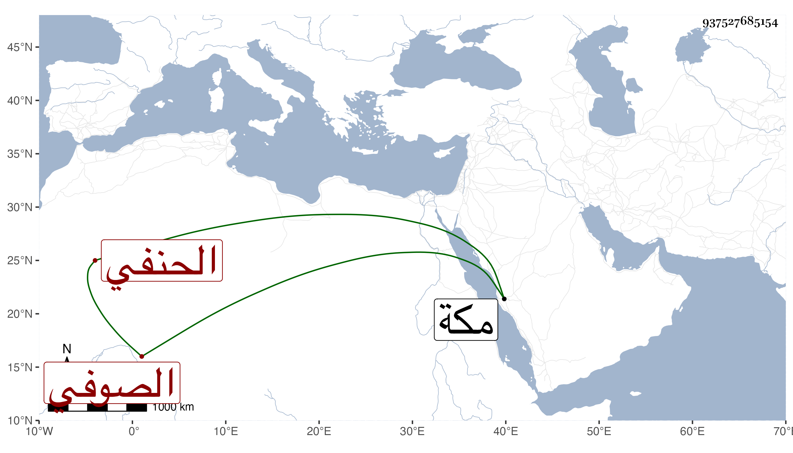

0902Sakhawi.DawLamic.ITO20230111-ara1.EIS1600.937527685154
Biography ID: 937527685154
431
محمد المحب الصوفي الحنفي . نشأ بخانقيا فحبب إليه العلم وتردد للأمين الأقصرائي وغيره ولازم نور الدين الطنتدائي في الفرائض ونحوها وتزوج ابنة صاحبنا المحدث ابن قمر ، وفهم قليلا وتنزل في الجهات بل أم في مجلس البيبرسية وحصر دريهمات من التسبب وغيره فسافر إلى مكة فجاور بها مدة ودفعها الشخص قراضا فأكلها بحيث قيل أن ذلك سبب موته وكان في سنة تسع وثمانين وأظنه زاحم الخمسين وكان لا بأس به مع حرصه رحمه الله وعفا عنه . وقرر تغرى بردى القادري في الإمامة ابن صاحبه الكمال الطويل الشافعي ولم يلتفت لكونها فيما أظن للحنفية .
